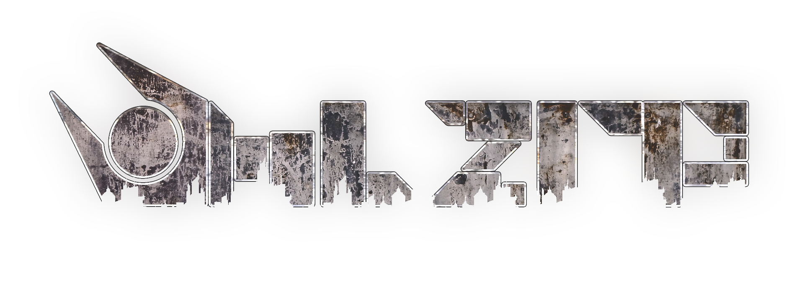

LampServ.org
Хостим кастомные игровые сервера в Garry's Mod с 2015 года!
Group
Discord
Steam
Кто мы такие?
LampServ — это большое игровое сообщество, основанное на игре Garry's Mod в 2015 году.
Абсолютно все наши игровые сервера являются и будут являться кастомными со своими уникальными разработками, которые вы больше нигде и никогда не увидите.
Наше игровое сообщество всегда стремилось к тому, чтобы все наши пользователи получали удовольствие и веселье от игры, ведь здесь Вы сможете найти все нужные для этого условия, а также очень много дружелюбных и весёлых игроков.
Мы всегда будем рады новым участникам!
Наши проекты

×
YandereRP
Правила сервераПравила сервера подверглись небольшим изменениям.
Основные изменения можно заметить в правилах строительства и дополнительных правилах сервера.
Их можно отличить по в начале правила.
Список правил на сайте является самой последней версией.
Правила в игре на F1 обновляются спустя через какое-то время после обновления здесь.
Основные правила
NonRP
- Общее — не совершай действий, которые никогда бы не сделал здравомыслящий человек в реальной жизни.
- Роль — отыгрывай свою роль. Полицейские не должны бегать по школе и разгонять учеников по кабинетам. Для этого есть охранники и учителя.
- Строительство — любые постройки должны соблюдать законы физики и не выходить за рамки безрассудства.
RDM — Random Death Match
- RDM — это убийство без причины. Нельзя убивать других игроков просто потому что Вам так захотелось. Для убийства необходима очень веская причина.
- MassRDM — это убийство более трёх человек без причины.
NLR — New Life Rule
- В течении 2 минут возвращаться на место смерти запрещено.Исключениями являются: дом и место работы.
- Так же нельзя мстить человеку, который Вас убил.
- Это правило так же работает после смены профессии, т.е. если Вас оскорбил какой-то хулиган, а через пару минут он сменил профессию — он является уже другим человеком.
FreeArrest
- Арестовать человека просто потому что Вам так захотелось — нельзя.
- Для ареста человека всегда должна быть особая причина, а арест всех подряд понесёт за собой более жёсткое наказание.
FreeDamage
- Как можно было догадаться исходя из правил выше, избивать других людей просто исходя из каких-то личных побуждений нельзя. Даже для одного удара должна быть весомая причина.
FearRP
- Вы должны бояться за свою жизнь и того, чего боятся люди в реальной жизни. Например:
- Нельзя спрыгивать с крыш высоких зданий;
- Нельзя убегать от вооружённого человека под дулом пистолета;
- Нельзя убегать от вооружённого человека с ножом находясь в метре от него;
- Нельзя оскорблять и как-то издеваться над группой полицейских.
PowerGaming
- Вы не должны превышать физические способности своего персонажа: 1 школьник не сможет перебить 5 хулиганов окруживших его.
JobAbuse
- Нельзя использовать смену профессии для своей собственной выгоды, например:
- Сменить профессию на Сомнительного ученика, чтобы просто купить нож, а потом вновь взять Школьника.
- Услышав оскорбления в свой адрес сменить профессию на Полицейского, чтобы арестовать человека, который оскорбил Вас.
MetaGaming
- Запрещается сообщать РП информацию в NonRP-чат (OOC, Админ-чат, PM, Skype, Steam, Discord и т.д.)
- OOC чат запрещается использовать для отыгрывания РП, т.е. нельзя писать в ООС чат что-то вроде:
- Полиция, меня грабят! Приезжайте по адресу...
- Открылся магазин на ... приходите, закупайтесь!
- Так же нельзя использовать информацию полученную из ООС чата в РП ситуациях.
GreenZone Abuse
- Запрещается использовать Safe-Zone для того, чтобы избежать получения урона. Например, убегая от хулиганов забежать в неё и отказываться выходить из неё.
- Запрещается использовать бессмертие в Safe-Zone в личных и корыстных целях.
PropKill, PropDamage
- Запрещается каким-либо способом наносить другим игрокам урон при помощи пропов.
DoorAbuse, FadingDoorAbuse
- Запрещается каким-либо способом умышленно блокировать проход другим игрокам при помощи дверей.
- Запрещается использовать Fading Door для перестрелок, например: прицелиться, открыть на секунду, выстрелить в голову и сразу же закрыть.
- Так же запрещается предотвращать взлом путём открытия и закрытия Fading Door.
FreeDemote, NRP Demote
- Нельзя увольнять игроков без причины / несоответствующей причине.
Проще говоря: просто потому что захотелось. - Нельзя увольнять игроков по неадекватной причине / причине не относящейся к РП процессу Примеры как делать нельзя:
- Игрок 1 начал голосование за увольнение Игрока 2 по причине:
- Игрок 1 начал голосование за увольнение Игрока 2 по причине: иди нахуй
- Игрок 1 начал голосование за увольнение Игрока 2 по причине: NonRP
- Игрок 1 начал голосование за увольнение Игрока 2 по причине: хочу его должность
ScoreAbuse
- Запрещено беспричинно раздавать оценки игрокам.
- Запрещается ставить оценки игрокам где-то за пределами здания школы.
Исключение: спортивная площадка, бассейн и тренажёрный зал.
Правила строительства
PropBlock
- Запрещается блокировать проход пропами, если сумма их здоровья больше 1000.
Если сумма их здоровья больше 1000, Вы обязаны поставить FadingDoor + KeyPad/Кнопка. - Запрещается блокировать игроков любыми способами.
PropSurf, PropClimb
- Запрещается использовать пропы для того, чтобы забраться куда-то, куда невозможно попасть без них.
Прочее
- Строить можно только на своей территории или на территории другого игрока с его разрешения. Ваша территория — это помещение от которого куплены все двери.
Исключением являются РП постройки, которые были согласованы с другими игроками.
К слову о территории:
- чтобы строить на территории школы, необходимо иметь разрешение от директора или его заместителя;
- чтобы строить на территории города, необходимо разрешение от мэра.
- Не прячьте предметы внутри пропов
- Не ставьте невидимые пропы. Абсолютно любой предмет должен оставаться видимым.
- Запрещается использовать Fading Door без Keypad
- Запрещается использовать больше двух Keypad для одной Fading Door
Дополнительные правила сервера:
- ChatSpam — запрещается спамить в чат.
- MicSpam — запрещается использовать голосовой чат для создания неприятных, мешающих другим игрокам звуков.
- Если Вас оскорбили, Вы можете наказать обидчика. Но если администрация сервера попросит у Вас доказательства после убийства, Вы должны будете их предоставить.
- Запрещается использовалие любых неисправностей, неполадок, ошибок сервера (багов) в личных и корыстных целях.
В случае использования ошибок сервера Вы можете быть наказаны длительным баном и/или полным обнулением аккаунта.
В случае обнаружения бага НЕОБХОДИМО связаться с модератором или администратором сервера. Наилучший вариант — написать главному администратору. - На объявление общешкольного собрания директором или комендантского часа мэром всегда должна быть веская причина.
- Полицейские обязаны патрулировать город, а не бегать по школе и разгонять учеников по кабинетам. Для таких целей есть Охранники. Полицейские должны появляться на школьной территории только по вызовам, а не потому что им захотелось.
- Сотрудникам правоохранительных органов запрещено убивать своих коллег. Для ситуаций, когда сотрудник не соблюдает субординацию или нарушает правила - есть /demote и на крайний случай Админ чат.
Игровой процесс
- Запрещается воспроизведение музыки в голосовой чат находясь не в профессии "Вокалоид" или "Глава музыкального клуба".
- Запрещается воспроизведение различного рода громких звуков и музыки (bassboosted, earrape, etc.) в голосовой чат.
- Запрещается включать любую музыку на спавне.
- За безосновательное оскорбление членов администрации сервера вам могут выдать мут.
- Запрещается оставлять коробку для деталей в непосредственной близости от мусорок. Вы должны прятать её у себя дома или каком-то безлюдном месте, а не за пропом c FadingDoor и кейпадом в общественном месте.
- Учителя и охранники имеют право подойти к ученику и попросить перестать рыться в мусорке. Если у ученика нет весомой причины для этого и он продолжает рыться в ней, то он может быть арестован.
- Нельзя "видеть чужую профессию", т.е. не мирные профессии для Вас невидимы. Например, нельзя обыскать сомнительного ученика просто потому что он сомнительный ученик.
Остались вопросы?
×
YandereRP
YandereRP
Контент сервера
Зайдя на сервер испытываете проблемы с пробегающими ERROR рядом с вами и вырвиглазными эмо-текстурами?
Вполне возможно Вы просто не подписались на наш контент.
Если после установки контента Вы всё ещё испытываете проблемы, то можете попытаться воспользоваться гайдами и контентом от наших игроков:
×
YandereRP
YandereRP
Краткий помощник
Что это и куда я попал?
YandereRP — это первый русскоязычный ролеплей сервер в игре Garry's Mod по мотивам активно развивающегося Yandere Simulator.
РП? А какое?
Наш сервер является скорее Semi-HardRP сервером, но это не означает, что Вам кто-то запрещает вдаваться в детальные РП ситуации.
Так сказать, SeriousRP никто не запрещал.
Я нашёл баг! Что мне делать?
Вы можете сообщить о баге в нашей группе ВКонтакте, дискорде, либо напрямую разработчикам сервера.
Меня забанили. Я не согласен с решением администрации. Хочу разбан.
Вы можете потребовать разбана в нашей группе ВКонтакте, либо дискорде. Так же можете оставить жалобу на администратора, который Вас забанил в обсуждениях в группе ВК, либо лично менеджеру сервера.
Игрок нарушил правила / Администрация не выполняет обязанностей / Администрация злоупотребляет возможностями
Оставьте жалобу на игрока/администратора в нашей группе ВКонтакте, либо дискорде. Вашу жалобу обязательно рассмотрят, выяснят детали, если потребуется и, возможно, игрок/администратор понесёт наказание.
Я играл на SchoolRP и могу ли я перенести весь свой донат на YandereRP?
Нет, но мы подготовили бонусную программу для тех, кто помогал серверу SchoolRP донатами.
Бонус можно получить на сервере YandereRP. Для этого просто введите в чат команду: /schoolrp_bonus
Вы сразу получите пифы на счет, и сможете потратить их на игровые предметы сервера (F6).
Не стоит забывать, что YandereRP - сторонний сервер. Была проделана огромная работа, чтобы отблагодарить вас за пожертвования Ламповой Школе. Не стоит жаловаться на то, что вам не вернули 100% доната.
Бонус есть бонус.
Пожертвование есть пожертвование.
Никто не виноват в том, что Школа закрылась. Она жила так долго только благодаря вам!
Я хочу стать администратором на сервере. Правила знаю, но куда писать?
Оставьте заявку в нашей группе ВКонтакте, либо дискорде. Вашу заявку обязательно рассмотрят и свяжутся, если в ней не будет никаких проблем или ошибок.
Если Вашу заявку слишком долго не рассматривают, то напишите менеджеру сервера.
Как мне вызвать администратора?
Напишите в чат /// жалоба.
Пример, /// РДМ.
А в общий чат как написать?
Для этого вам нужно написать // сообщение.
Пример, // Привет всем.
Как мне узнать фазу дня?
Слева в верхнем углу есть часы. Под ними написана фаза дня и её краткое описание.
Как мне узнать сколько у меня часов на сервере?
В левом верхнем углу написано общее время ,проведённое на сервере.
Как мне найти банк, Автобусного диспетчера, Полицейский участок?
В правом верхнем углу есть миникарта со всеми жизненно необходимыми местами.
Как мне выбрать профессию/открыть карту/посмотреть команды/купить предметы/патроны/посмотреть прокачку своих умений?
Откройте F4 и выберите соответсвующий раздел.
Почему все вокруг бегают в разных скинах, а я в стандартном? И что такое Поинты?
За каждый час проведённый на сервере вы получаете 2 поинта. Потратить их можно в поинт-шопе (F2) .
Почему все вокруг такие быстрые и сильные, живучие?
На сервере присутствует прокачка умений. Деритесь, чтобы прокачивать урон, бегайте, чтобы скорость и играйте, чтобы жизнь.
Как мне узнать какая зарплата у какой профессии?
Вам нужно зайти в F4 > Профессии. В данном разделе показываются все профессии и их заработные платы.
Что такое достижения и как их получить?
На нашем сервере присутствует система достижений. Посредством определённых манипуляций вы выполняете определённое достижение. Их список можно посмореть введя в консоль ls_ach
Я не получаю зарплату.
Вы получаете зарплату, но она приходит в банк. Пройдите в банк и снимите заработанные деньги
Где мне посмотреть мой ник, Профессию, зарплату, состояние персонажа и деньги на руках?
В левом нижнем углу есть HUD.
Как мне сменить ник, выбросить денег и тд?
Нажав на С у вас откроется мини-меню со всеми возможностями.
Что такое ПИФы и на что их можно потратить?
ПИФы - донатная валюта. 1 ПИФ = 1 рублю. Донатное меню вы можете открыть на F6 . Там же и пополнить ваш счёт.
Как получить бонус в группе ВК?
Напишите /vkbonus и вы получите краткую инструкцию.
Я попросил администратора предъявить номер правила на моё нарушение. Он отказался. Почему?
Администрация не обязана предъявлять вам номер правила, которое обоснует действия администратора. Если вы не согласны с администратором, то подавайте на него жалобу в обсуждениях в группе ВК. Также вы обязаны выполнять требования администратора в разумных целях (скрин инвентаря, вещей на руках, денег и т.д.)
Как мне написать в общий чат?
Для этого вам нужно написать // сообщение. Пример, // Привет всем.
Имею ли я право оскорбить администратора?
Нет. Вы имеете право высказать ему осмысленную критику в разумных пределах и обосновать своё мнение. В противном случае вы получите мут
×
HL2RP
Правила сервераОстались вопросы?
×
HL2RP